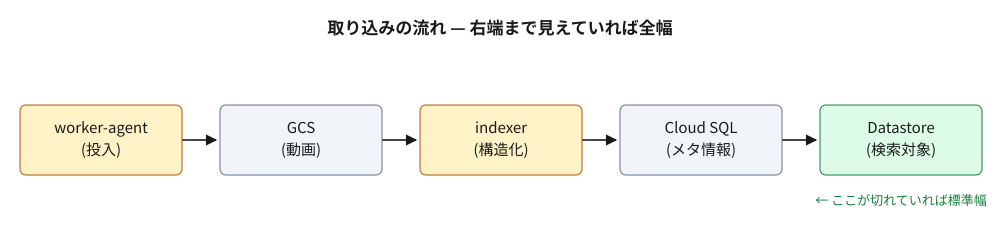

このページは e2e の固定 fixture。中身を変えると PR に貼られるスクショも変わる。
図は 1000px。本文枠 (52rem) には収まらず、全幅にすると丸ごと入る。max-width:none を明示しているのは、書き手が「縮小せず原寸で出す」と決めた実際のページに合わせるため — ビューア側の CSS では上書きできない形をそのまま再現している。
max-width:none

標準幅では右端の Datastore が枠の外に出る。全幅にすると 5 つの箱が すべて見える。